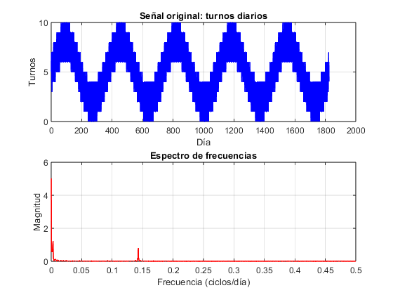
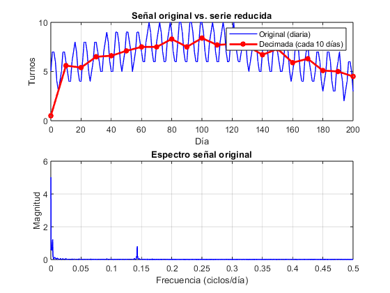
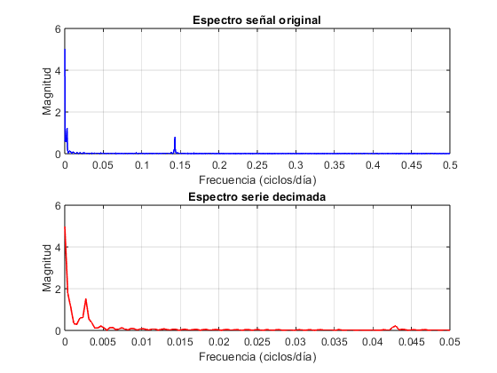
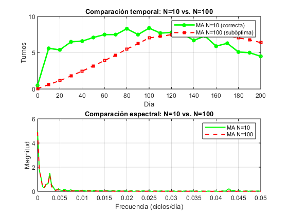
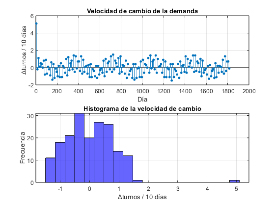

Stella, Juan: 12552
Contents
PARCIAL I: CONTROL Y SISTEMAS
Contexto
Estás analizando la cantidad de turnos atendidos en un consultorio médico. El sistema registra diariamente el número de pacientes atendidos, generando una serie temporal discreta x[k], donde cada muestra representa un día.
Objetivo
El equipo de gestión solicita elaborar un reporte resumido con un valor representativo cada 10 días, con el objetivo de facilitar el monitoreo operativo y la planificación de recursos a largo plazo, eliminando las fluctuaciones diarias irrelevantes para la tendencia general anual.
Criterio de evaluaión
“No se evaluará únicamente el resultado numérico, sino la calidad del razonamiento técnico y la justificación de las decisiones de diseño.”
"Cuide la presentación, escala, colores, títulos y leyendas de sus gráficos para hacerlos lo más legible posible para la evaluación."
Tareas a desarrollar
Diseñar e implementar en MATLAB un script que permita reducir la serie temporal original. La salida debe ser una nueva serie reducida que entregue un valor representativo cada 10 días.
1. Análisis Previo de los Datos
Seleccione y aplique comandos de MATLAB para estudiar la señal original y extraer la información relevante.
%------ clc clear x = load('datos_turnos.txt'); N = length(x); k = (0:N-1)'; fs = 1; [freq_x, mag_x] = my_dft(x, fs); figure subplot(2,1,1) plot(k, x, 'b', 'LineWidth', 1.2) title('Señal original: turnos diarios') xlabel('Día'); ylabel('Turnos'); grid on subplot(2,1,2) plot(freq_x, mag_x, 'r', 'LineWidth', 1.2) title('Espectro de frecuencias') xlabel('Frecuencia (ciclos/día)'); ylabel('Magnitud') grid on; xlim([0 0.5]) %------

1.1 Justifique brevemente la elección de dichas herramientas
% Respuesta %Utilicé herramientas para ver el comportamiento general, el rango que %toman los valores, etc (plot). Además, un anlálisis en frecuencia para ver %las componentes con mayor influencia.
1.2 Explique los resultados obtenidos del análisis
% Respuesta % La señal tiene 1825 muestras (5 años).Los valores están entre 0 y 10 turnos. % El espectro muestra picos claros en el período de 365 días y en el período de 7 días
1.3 Mencione qué información le resulta relevante y útil para la solución.
% Respuesta % La señal tiene una componente de alta frecuencia en el periodo de 7 días, que se debe filtrar antes de decimar % Se desea un valor cada 10 días: factor de decimación M = 10.
2. Pre-Proceso
Proceda a realizar el tratamiento de la señal
%----------------------------------------- % Coloque el código de su solución aquí %----------------------------------------- M = 10; % factor de decimación: 1 muestra cada 10 días fs_new = fs/M; % nueva frecuencia: 0.1 muestras/día frec =1/10; N_ma = round(fs/frec); b = (1/N_ma)*ones(1,N_ma); a = 1; x_filt = filter(b, a, x); %-----------------------------------------
2.1 Comente brevemente sobre el método elegido para el pre-procesamiento.
% Respuesta % Se utiliza un filtro FIR tipo MA de orden N=10, ya que promedia los últimos 10 días, generando directamente el valor representativo cada 10 días. % Al ser FIR garantiza fase lineal, lo cual es importante para preservar la alineación.
2.2 ¿Por qué dicha técnica es necesaria y adecuada para este problema específico? (considerando el contenido frecuencial).
% Respuesta % Es necesaria porque decimar sin filtrar produciría aliasing ya que la componente semanal (f=1/7) es mayor que la nueva frecuencia fs_new y se solaparía con la tendencia anual, %El MA es adecuado porque actúa como filtro pasa-bajos, atenuando las altas frecuencias, y con N=10 produce directamente el promediado.
2.3 Mencione los criterios utilizados para definir los parámetros del sistema de procesamiento.
% Respuesta % N_ma = 10: Así cada muestra decimada es exactamente el promedio de los 10 días correspondientes
3. Generar serie final y gráficos
A partir del procesamiento anterior, generar la serie final y grafiquela en el tiempo y la frecuencia. Asegurarse de que la alineación temporal sea correcta respecto a la señal original.
%----------------------------------------- % Coloque el código de su solución aquí %----------------------------------------- x_dec = x_filt(1:M:end); k_dec = (0:length(x_dec)-1)' * M; figure subplot(2,1,1) plot(k, x, 'b', 'LineWidth', 1, 'DisplayName', 'Original (diaria)') hold on plot(k_dec, x_dec, 'r-o', 'LineWidth', 2, 'MarkerSize', 4, 'DisplayName', 'Decimada (cada 10 días)') title('Señal original vs. serie reducida') xlabel('Día'); ylabel('Turnos'); grid on; legend; xlim([0 200]) subplot(2,1,2) [freq_o, mag_o] = my_dft(x, fs); plot(freq_o, mag_o, 'b', 'LineWidth', 1.2) title('Espectro señal original') xlabel('Frecuencia (ciclos/día)'); ylabel('Magnitud'); grid on [freq_o, mag_o] = my_dft(x, fs); [freq_d, mag_d] = my_dft(x_dec, fs/M); figure subplot(2,1,1) plot(freq_o, mag_o, 'b', 'LineWidth', 1.2) title('Espectro señal original') xlabel('Frecuencia (ciclos/día)'); ylabel('Magnitud'); grid on subplot(2,1,2) plot(freq_d, mag_d, 'r', 'LineWidth', 1.2) title('Espectro serie decimada') xlabel('Frecuencia (ciclos/día)'); ylabel('Magnitud'); grid on %-----------------------------------------


4. Validación de la respuesta
Comparar su solución con al menos una alternativa que considere incorrecta o subóptima para validar por contraste la suya.
%----------------------------------------- % Coloque el código de su solución aquí %-----------------------------------------
4. Validación de la respuesta
N_subopt = 100; b_subopt = (1/N_subopt) * ones(1, N_subopt); x_filt_subopt = filter(b_subopt, 1, x); x_dec_subopt = x_filt_subopt(1:M:end); k_dec_subopt = (0:length(x_dec_subopt)-1)' * M; [freq_subopt, mag_subopt] = my_dft(x_dec_subopt, fs/M); figure subplot(2,1,1) plot(k_dec, x_dec, 'g-o', 'LineWidth', 2, 'MarkerSize', 4, 'DisplayName', 'MA N=10 (correcta)') hold on plot(k_dec_subopt, x_dec_subopt, 'r--s', 'LineWidth', 1.5, 'MarkerSize', 4, 'DisplayName', 'MA N=100 (subóptima)') title('Comparación temporal: N=10 vs. N=100') xlabel('Día'); ylabel('Turnos'); grid on; legend; xlim([0 200]) subplot(2,1,2) plot(freq_d, mag_d, 'g', 'LineWidth', 1.5, 'DisplayName', 'MA N=10') hold on plot(freq_subopt, mag_subopt, 'r--', 'LineWidth', 1.5, 'DisplayName', 'MA N=100') title('Comparación espectral: N=10 vs. N=100') xlabel('Frecuencia (ciclos/día)'); ylabel('Magnitud'); grid on; legend %-----------------------------------------

4.1 Qué efectos negativos produce la alternativa subóptima (en el dominio del tiempo y/o frecuencia).
% Respuesta % El MA con N=100 sobresuaviza la señal, es decir, atenúa no solo el ciclo semanal sino también parte de la tendencia anual que se quería preservar. % En el dominio del tiempo los valores decimados no representan una ventana de 10 días sino de 30
4.2 Por qué su solución propuesta mitiga estos efectos.
% Respuesta % El MA con N=10 atenúa únicamente las fluctuaciones de alta frecuencia (ciclo semanal y superiores) % Además al coincidir N=M=10, cada muestra decimada es exactamente el promedio de los 10 días correspondientes
5. Tasa de Cambio (Derivada) y Punto Fijo
Se nos comunica que conocer solo la cantidad total de pacientes ya no es suficiente para organizar el consultorio. Ahora necesitamos saber qué tan rápido sube o baja esa cantidad. Esta "velocidad de cambio" de la demanda se calcula directamente usando la derivada matemática.
Como ingeniero proponés usar representación en punto fijo para optimizar el sistema: buscamos aumentar la velocidad de cálculo y minimizar el uso de memoria.
- Construya la velocidad de cambio de su señal resultado del ejercicio anterior en (turno/día).
- Analice cómo se distribuyen los valores de su señal (usando un histograma o gráfico).
- A partir de esa observación, determine un formato en punto fijo conveniente que ajuste para dicho rango
- Indique de su respuesta: N tamaño de la palabra binaria (8,16 o 32 bits) y los m bits para la parte entera, n bits para la parte fraccionaria usando la notación Qm.n (con 1 bit de signo), rango, resolución y ruido cuantización
Completar con los resultados obtenidos:
- Palabra binaria: 8 bits
- Representación: Q3.4 (1 bit signo + 3 enteros + 4 fraccionarios)
- Rango: [-8, 7.9375] turnos/10días
- Resolución: 0.0625 turnos/10días
- Ruido de cuantización: 0.03125 turnos/10días
%----------------------------------------- % Cálculo de la velocidad %----------------------------------------- vel = diff(x_dec); k_vel = k_dec(1:end-1) + M/2; figure subplot(2,1,1) stem(k_vel, vel, 'filled', 'MarkerSize', 3) title('Velocidad de cambio de la demanda') xlabel('Día'); ylabel('Δturnos / 10 días'); grid on subplot(2,1,2) histogram(vel, 20, 'FaceColor', 'b', 'EdgeColor', 'k') title('Histograma de la velocidad de cambio') xlabel('Δturnos / 10 días'); ylabel('Frecuencia'); grid on %----------------------------------------- % Coloque el código de su solución aquí %----------------------------------------- disp('Rango de la velocidad de cambio:') disp(['Min: ', num2str(min(vel))]) disp(['Max: ', num2str(max(vel))]) m = 3; % bits parte entera n = 4; % bits parte fraccionaria N_bits = 8; rango_min = -2^m; rango_max = 2^m - 2^(-n); resolucion = 2^(-n); ruido_cuant = resolucion / 2; disp(['Rango Q', num2str(m), '.', num2str(n), ': [', num2str(rango_min), ', ', num2str(rango_max), ']']) disp(['Resolución: ', num2str(resolucion)]) disp(['Ruido de cuantización: ', num2str(ruido_cuant)]) %-----------------------------------------
Rango de la velocidad de cambio: Min: -1.5 Max: 5.1 Rango Q3.4: [-8, 7.9375] Resolución: 0.0625 Ruido de cuantización: 0.03125
